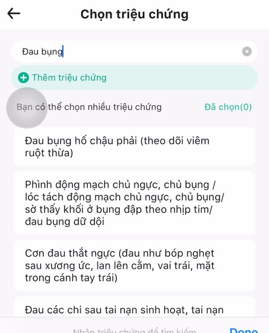
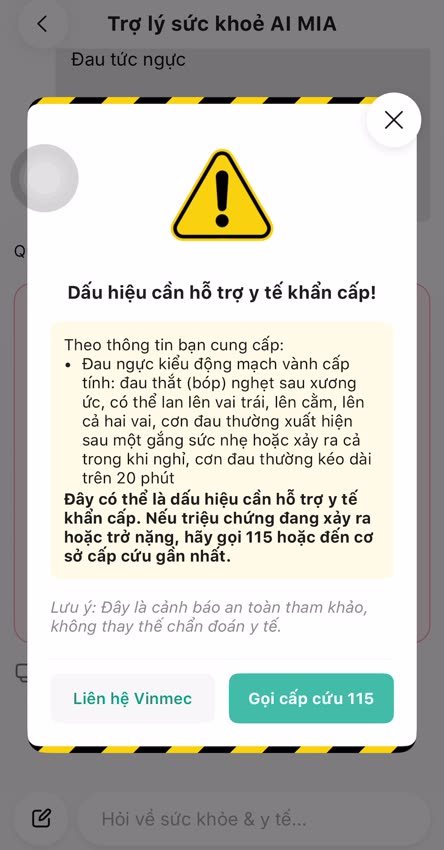
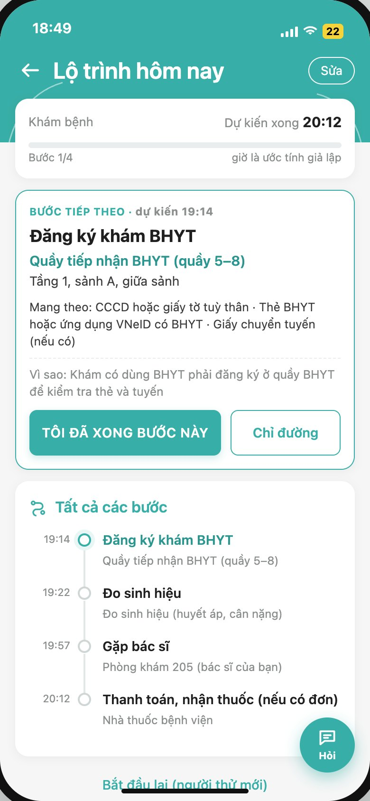
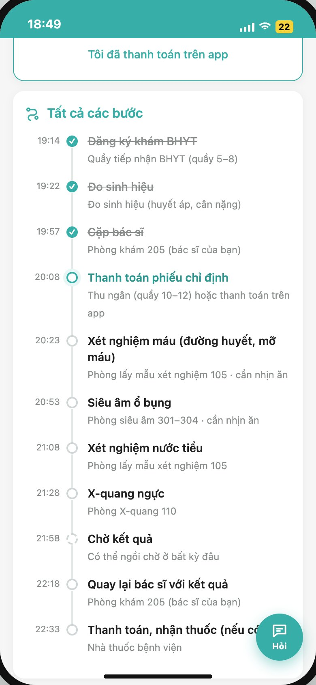
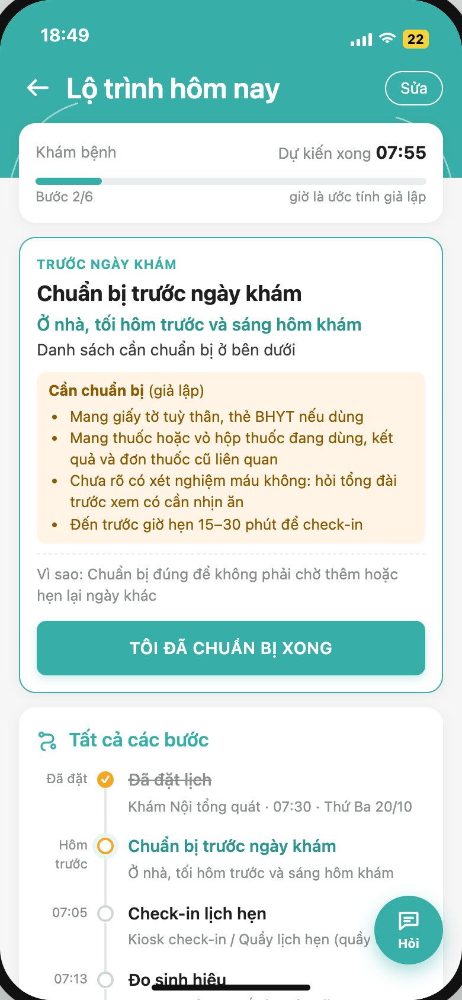
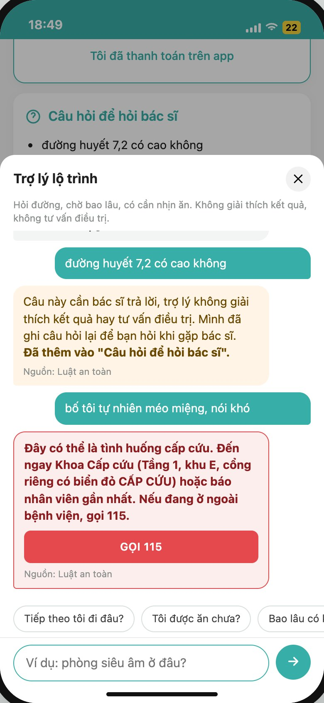

Hai lần đổi hướng theo bằng chứng, một giả thuyết đang kiểm chứng, và một prototype để học nhanh
Demo: lo-trinh-kham-prototype.vercel.app · thêm /?tour=1 để xem tour cho giám khảo
Thái Hoài An · K3 · Lab Coach AI Thực Chiến · 10/2026
Tour trên demo là bản do người làm bài bấm để giới thiệu, không phải buổi thử. Mọi bản cũ giữ lại trong repo (VERSIONS.md) để đối chiếu.
Phát hiện an toàn: form đặt lịch cho chọn "Cơn đau thắt ngực" như triệu chứng thường, trong khi MIA cảnh báo cấp cứu cùng mô tả; cảnh báo qua LLM mất khoảng 20 giây. → giữ nguyên tắc luật cấp cứu chạy trước AI.


"ở dưới quê là tới hẳn luôn không hầu như là không có ai mà đặt lịch hết"P2 · [00:00]
"anh cầm mỗi căn cước công dân hoặc thẻ bảo hiểm thôi"P1 · [01:58]
"nó hỏi mồm môi chứ không có đánh máy đâu" · "có nói được hết mà bảo em cảm thấy như này như này như này"P1 · [03:50], [04:00]
Trích nguyên văn transcript máy (Qwen3-ASR), giữ lỗi chính tả. Bản ghi gốc giữ ngoài repo.
| Tín hiệu | Số người |
|---|---|
| Đến thẳng viện, không đặt lịch | 2/2 |
| Không chuẩn bị gì ngoài giấy tờ | 2/2 |
| Bác sĩ hỏi bằng lời, dẫn quy trình | 2/2 |
| Nói được hết với bác sĩ | 1/2 (ý kiến) |
Lỗi phỏng vấn của mình (P2): hỏi dẫn dắt ở [00:23], giới thiệu ý tưởng giữa buổi ở [04:45]. Phần sau đó không dùng làm bằng chứng nhu cầu.
| Điểm đau | Bằng chứng |
|---|---|
| Quy trình rườm rà, bị "đẩy qua phòng", nghi bị làm thêm dịch vụ | 1/2 · ý kiến P2 [01:56], [03:47] |
| Không biết vào quầy, phòng nào, theo thứ tự nào | 0/2 · giả thuyết P1 mô tả ngược lại: máy quét, tự chọn khoa |
| Tái khám phải làm lại quy trình, tự kể lại lịch sử | 1/2 · mô tả P1 [03:08], không tỏ ra bực |
"Chờ lâu" và "không biết giờ" là hai vấn đề khác nhau. Giờ dự kiến không làm hàng đợi ngắn lại.
Cách để người bệnh ngoại trú, nhất là người đến lần đầu hoặc đến thẳng, gặp tình huống không biết bước tiếp theo phải đến quầy hay phòng nào, theo thứ tự nào, có thể đi hết buổi khám đúng chỗ, đúng thứ tự mà không phải hỏi nhiều người hay quay lại chỗ cũ.
Người đến lần đầu có tìm đúng quầy đầu tiên mà không phải hỏi người khác không? Chỉ số: số lần hỏi người điều phối.



Phòng, vị trí, thời gian chờ đều giả lập. Bản demo có noindex và nhãn "không phải ứng dụng của Vinmec".
| Kiểm thử kỹ thuật (chế độ luật) | Kết quả |
|---|---|
| Ràng buộc lộ trình (luật tự viết) | 16/16 |
| Hiểu đúng câu hỏi · held-out 20 câu | 14/20 |
| Câu y khoa nói vòng bị chặn · held-out / held-out2, trước khi vá | 1/3 · 0/6 |
| Sau khi vá luật 19/10 (trên chính các câu đã thấy) | 6/6 · không khách quan |
| Câu cấp cứu bị chặn | 6/6 |
| Bộ chính 44 câu (đã chỉnh luật theo bộ này) | 44/44 · không khách quan |
Câu hỏi do người làm bài và AI viết, chưa phải câu người bệnh gõ. Số khách quan sau khi vá: chưa có.
Không dùng "có thích không" hay lượt dùng làm chỉ số; nút thích lệch về phía khen.

| Rủi ro | Cách giảm |
|---|---|
| Người bệnh trở nặng khi đang chờ | Luật cấp cứu chạy trước, không gọi LLM; chỉ đường khoa Cấp cứu, nút 115 |
| Trợ lý trả lời câu y khoa | Luật y khoa thắng mọi phân loại; câu trả lời chỉ ghép từ dữ liệu phòng; câu hỏi được lưu để hỏi bác sĩ |
| Giờ dự kiến sai làm lỡ lượt | Ghi rõ "ước tính giả lập"; app thật phải lấy từ hệ thống gọi số |
| Nhầm prototype với app thật | Nhãn mô phỏng, noindex, tên miền không chứa "vinmec" |
| Lộ thông tin | Che SĐT, email, số giấy tờ trước khi log hoặc gửi LLM; bản ghi phỏng vấn giữ ngoài repo |
Đã vá 19/10: câu diễn giải kết quả, thuốc, thực phẩm chức năng không bao giờ nhận câu trả lời vị trí phòng. Còn mở: chưa có số đo khách quan sau khi vá; danh sách dấu hiệu cấp cứu chưa được bác sĩ duyệt.
Hỏi bệnh trước khám, kết quả vào thẳng bệnh án; hơn 1.800 cơ sở. → Phiếu phải đi vào workflow của bác sĩ, không phải màn hình riêng.
Danh sách câu hỏi giúp hỏi nhiều hơn khi bác sĩ đồng thuận. → Câu y khoa không trả lời, chỉ giữ lại để hỏi bác sĩ.
Chỉ 26,4% người từ 65 tuổi điền phiếu trước khám, trung vị 14 phút. → Ngắn, bấm chọn, không bắt buộc.
Đặt lịch, thanh toán, kết toán BHYT trên điện thoại đã tốt; phiếu ghi phòng và tầng; hướng dẫn quy trình là bài viết chung. → Không làm lại phần đã tốt.
| Lỗi trong bài này | Quy tắc cho K4 |
|---|---|
| Kết luận từ lời kể lại | Chỉ tính buổi có ghi chép; kiểm câu trích với bản ghi |
| Hỏi dẫn dắt, giới thiệu ý tưởng giữa buổi | Hỏi một lần cụ thể; ý tưởng chỉ nêu ở cuối |
| Làm giải pháp trước khi định nghĩa xong vấn đề | Xong pain pattern và câu hỏi cần học rồi mới prototype |
| Một phiên thử ôm nhiều tính năng | Một phiên, một giả thuyết, một chỉ số |
Nhịp: check-in 15 phút mỗi tối, báo cáo thứ Sáu; trễ 1 mốc nhắn riêng, trễ 2 mốc gọi 10 phút.